2026
2026年9月17日(木)Yukinco Band Vol.3 ― Yukiko Okuno Birthday Live Yuki Shibata(pf) / Mitsunori Yoshioka(b) / Shunsuke Yamashita(gt) / 阿部拓也(ds) @六本木クラップス 開場18:00 開演19:00 S席¥7,500 / A席¥5,500(+1st drink代800円) 主催:Eutis Music Office

2026年9月9日(水)Primo Anniversary 20th「Primo Delicious 14th 〜Primoがお届けする年に一度のおいしい時間、おいしい幸せ。〜」Presents by ECC ゆきんこバンド 他出演 @Billboard Live TOKYO 17:30開場 18:30開演 主催:Primo 協賛:株式会社ECC、オリエンタルバイオ株式会社
2026年9月5日(土)Lumina MIYOSHI こけら落とし公演&オープニングイベント 13:45開始 @みらい広場 三芳ウインドオーケストラコンサート 主催:三芳町
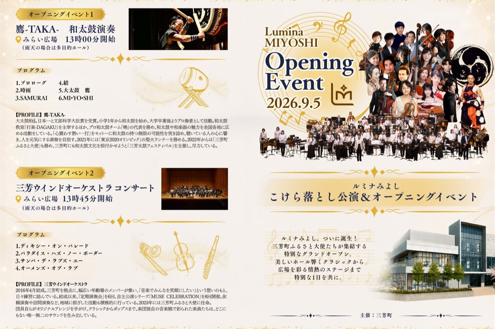
2026年8月29日(土)「circle M CONCERT vol.11」客席Open11:30 @板橋区立文化会館小ホール 入場無料 楽器を問わず集まった音楽愛好家とMの集い恒例の夏の響宴。阿部拓也は講師/賛助出演としてドラムで参加
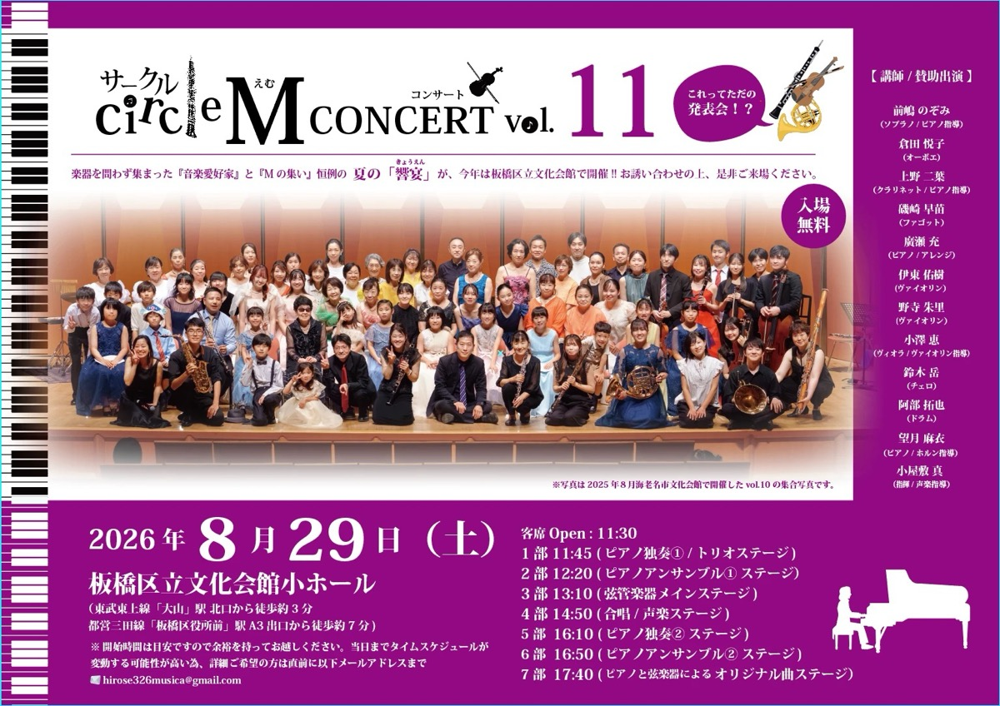
2026年8月10日(月)「情熱のスペイン&カルメン 名曲コンサート」@小田原三の丸ホール 加藤のぞみMs 笛田博昭Ten 又吉秀樹Bar 橘田有美Sop 河島玲奈Fl 白井彩Vc 廣瀬充Pf 阿部拓也Perc
2026年7月18日(土)/19日(日)テノールまみれのコンサート 夏の陣 in 板橋&小田原 7/18 板橋区文化会館小ホール 13:00開演 / 7/19 小田原三の丸小ホール 13:30開演 阿部拓也(Drums & Percussion)
2026年5月9日(土)山ニガスプレゼンツ「親子で楽しめるチャリティーコンサート 世界音楽紀行」14:00開場 14:30開演 @所沢ミューズ 中ホール(マーキーホール) 入場無料(指定席・申込制) えむの集い 阿部拓也(ドラム/パーカッション)
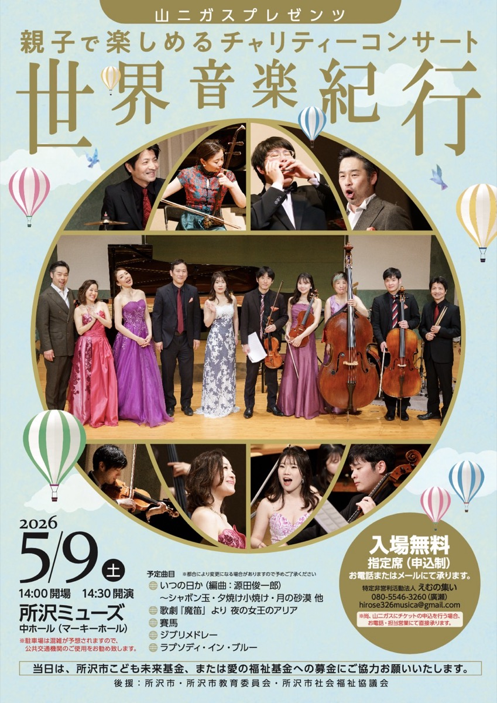
2026年4月29日(水・祝)Mの集いコンサート vol.26「昭和の日に送る 時代を彩る名曲の花束」14:00開演(13:30開場) @豊洲シビックセンターホール
2026年4月19日(日)三芳ウインドオーケストラ「MUSE CELEBRATION VOL.8 〜Featuring the Clear Sounds of a Small Ensemble〜」13:00開場 13:30開演 @ふじみ野ステラ・ウェスト ホール 指揮:阿部拓也
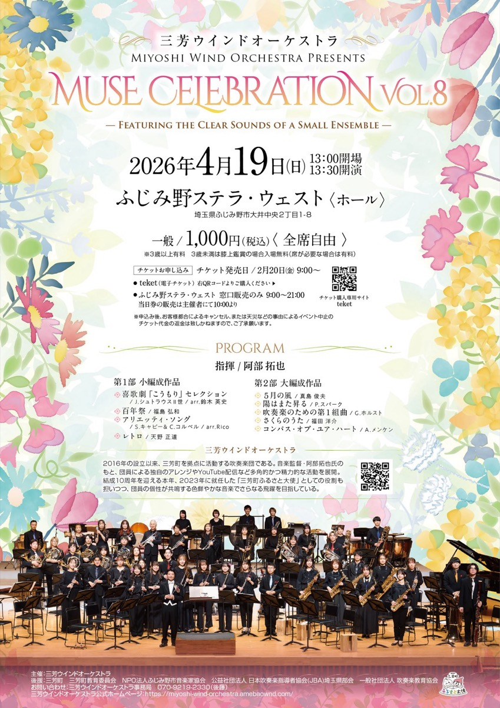
2026年4月17日(金)昭和・平成 生バンド歌謡コンサート「昭和・平成の名曲に酔いしれて」14:00開演(13:30開場) @さいたま市産業文化センター ホール 後藤美奈子vo 井上貴子sax 阿部拓也dr うえだようpf
2026年4月9日(木)真荷舟「原郷」Open18:30 Start19:00 @APIA40 東京都目黒区碑文谷5-6-9 サンワホームズ碑文谷ビルB1F 前売・当日共¥3,000+1ドリンク(学割¥2,000) 配信¥2,000 出演:Vo,Gt榎田竜路 Ds阿部拓也 Perc深野雄一
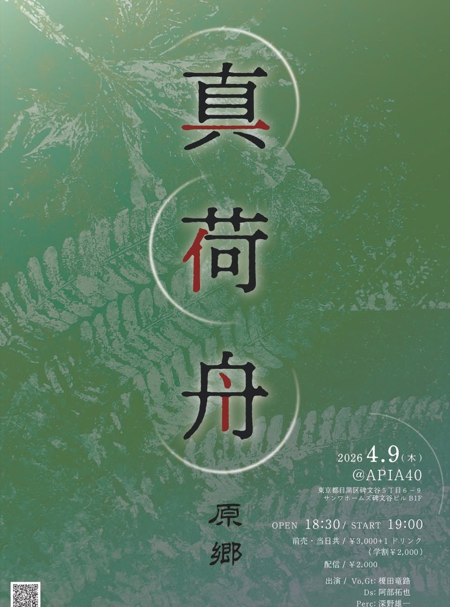
2026年4月4日(土)Joyful Concert 2026「子供のためのジョイフルコンサート」第一部10:50開演(ピアノ) 第二部15:20開演(うた・アンサンブルなど) @プラザイーストホール ゲスト:トランペット森崎美穂 ヴァイオリン高橋和歌 パーカッション阿部拓也
2026年3月6日(金)YUKIKO OKUNO SPECIAL BAND LIVE VOL.2「〜Sparkle of Sound〜」開演19:00(開場18:00) @ROPPONGI C*LAPS 柴田勇紀p 山下俊輔gt 吉岡満則b 阿部拓也ds ゲスト若林悠人cl
2026年1月16日(金)TAKUYA ABE QUARTET IZAEMON SPECIAL LIVE! 〜Winter Homecoming〜 Open18:00 Start19:00 @Garden pizzeria IZAEMON 小林真人p 前嶋のぞみvo 菅原聡美sax 阿部拓也ds
2026年1月10日(土)テノールまみれのニューイヤーコンサート vol.10「〜今年もきっとウマく行く〜」13:00/18:00開演(2回公演) @渋谷区文化総合センター大和田 伝承ホール
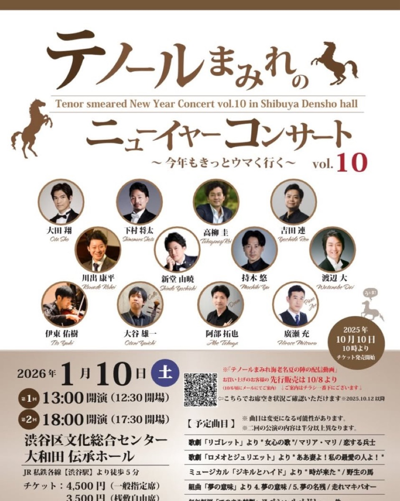
2025
2025年12月21日(日)テノールまみれのクリスマスコンサート in かなっく 14:00開演(13:30開場) @横浜市神奈川区民文化センター かなっくホール
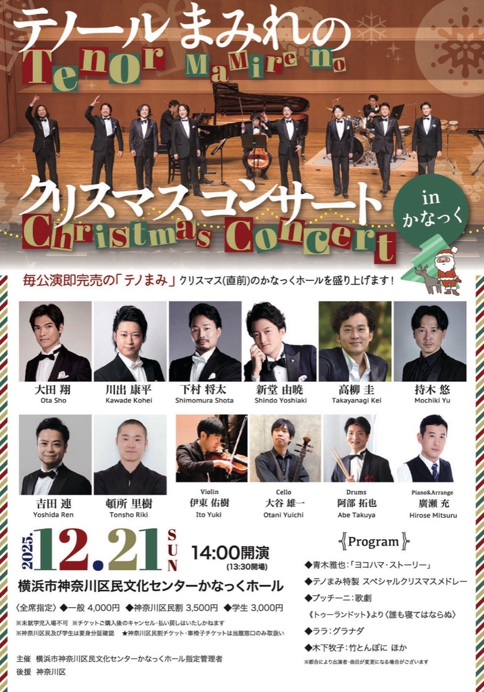
2025年11月24日(月・休)新宿文化センター リニューアルオープニング・ツィクルス「アーティストバンク活用コンサート 〜ただいま!新宿〜」15:00開演(14:30開場) @新宿文化センター 大ホール Mの集い:阿部拓也(ドラム)
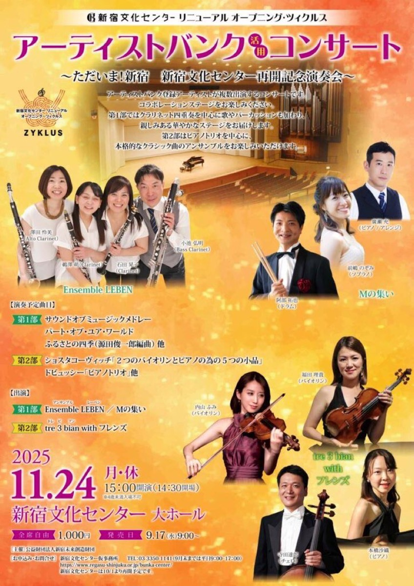
2025年11月22日(土)Fujimino Jazz Orchestra Special Concert 14:00開演(13:00開場) @ふじみ野ステラ・イーストホール 阿部拓也(Drums)
2025年11月16日(日)三芳ウインドオーケストラ「第6回定期演奏会」13:30開演(12:45開場) @ウェスタ川越(大ホール) 指揮:阿部拓也
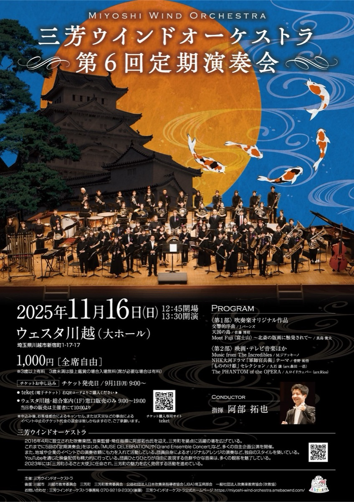
2025年10月26日(日)第47回 人権を考えるつどい「スポーツと人権」13:30〜16:00(開場13:00) @ふじみ野ステラ・イーストホール オープニング演奏:シエルサクソフォンカルテット&阿部拓也(パーカッション)
2025年9月24日(水)YUKIKO OKUNO BIRTHDAY LIVE「情熱と遊び心が音になる夜」開演19:00(開場18:00) @ROPPONGI C*LAPS 柴田勇紀p 山下俊輔gt 芹澤薫樹b 阿部拓也perc フルート:奥野由紀子
2025年8月29日(金)TAKUYA ABE QUARTET IZAEMON SPECIAL LIVE! 〜Summer Breeze, City Nights〜 Open18:00 Start19:00 @Garden pizzeria IZAEMON 小林真人p 前嶋のぞみvo 菅原聡美sax 阿部拓也ds
2025年7月21日(月・祝)テノールまみれのコンサート 夏の陣 in 海老名 13:00開演(12:30開場) @海老名市文化会館小ホール
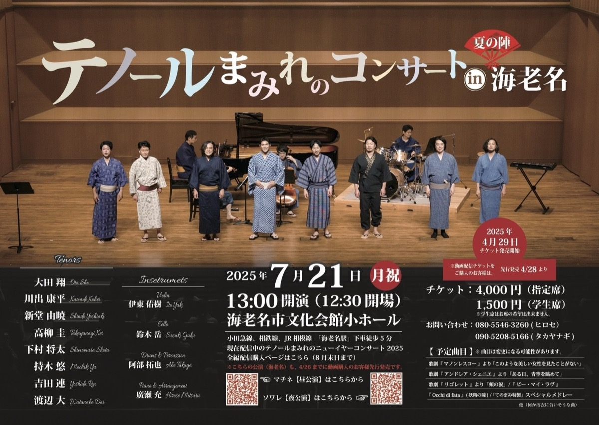
2025年6月24日(火)真荷舟「原郷」Open18:30 Start19:00 @APIA40 榎田竜路Vo,Gt 阿部拓也Ds
2025年6月22日(日)三芳ウインドオーケストラ「Grand Ensemble Concert vol.2」13:00開場 13:30開演 @コピスみよし(三芳町文化会館)ホール 指揮:阿部拓也
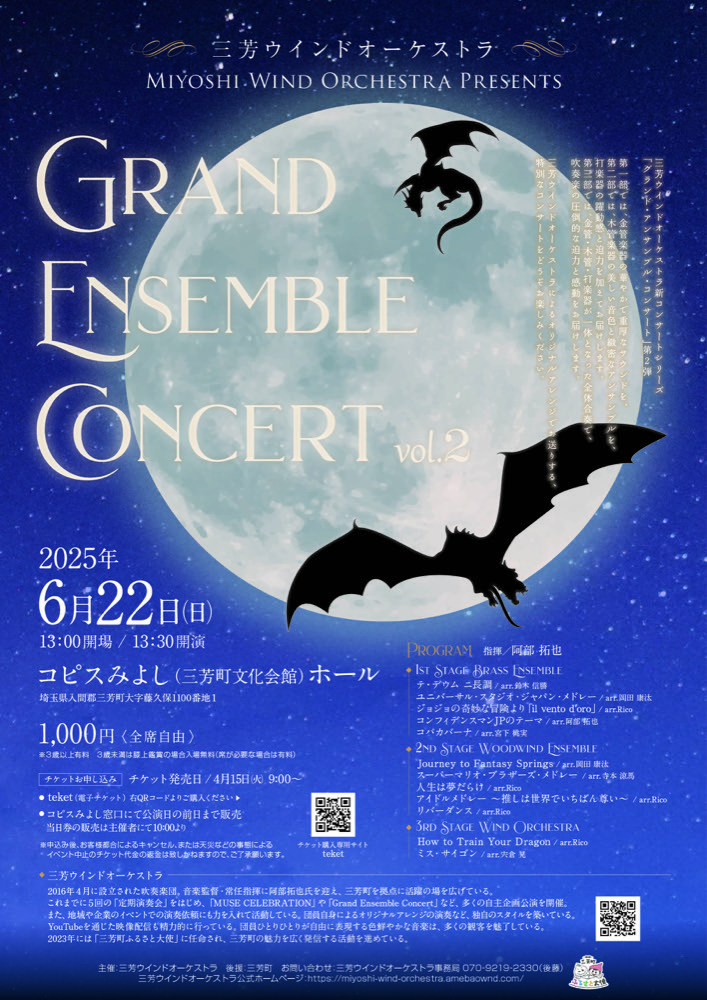
2025年5月31日(土)バンドフェスティバル Vol.18 13:30開場 14:00開演 @鶴瀬コミュニティセンターホール 入場無料 主催:エクスプロラシオン・ムジカ 共催:富士見HOT MUSIC CIRCLE 協力:埼玉音楽院
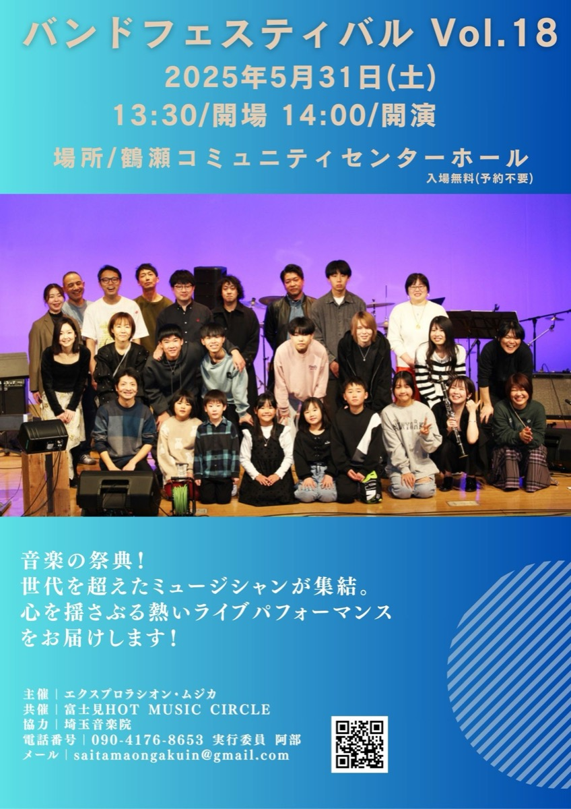
2025年5月11日(日)トロンボーンフェスティバル in 埼玉2025 12:45開場 13:30開演 @朝霞市民会館ゆめぱれす 中ホール 阿部拓也(ドラムス)
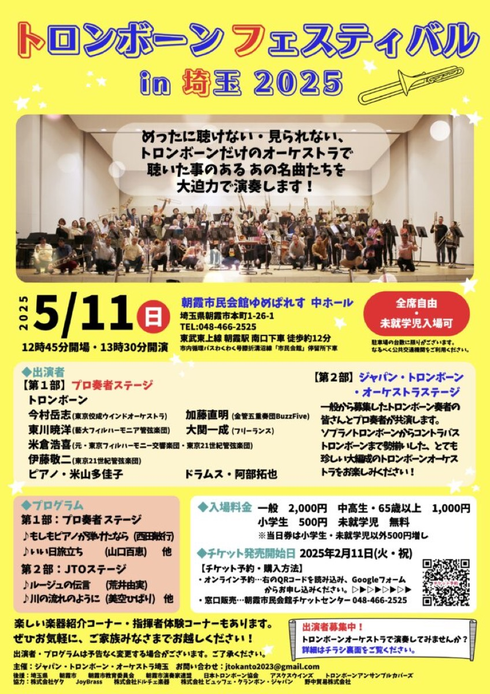
2025年4月19日(土)ポプリ ファミリーコンサート「〜わくわくおとあそび〜」①10:30 ②13:30開演 @和光大学ポプリホール鶴川 地下2階ホール 阿部拓也(ドラム)
2025年4月12日(土)「それいけ！クラシック」×「Mの集い」スペシャルコラボコンサート 12:30開場 13:00開演 @七生公会堂 阿部拓也(Perc)
2025年3月29日(土)第二回 三芳さくらまつり with みよし芸術祭・春 11:00〜19:00 @三芳町役場前 阿部拓也 Sunlight Quartet(阿部拓也ds 羽鳥絢子sax 小林真人p 森田章b)出演
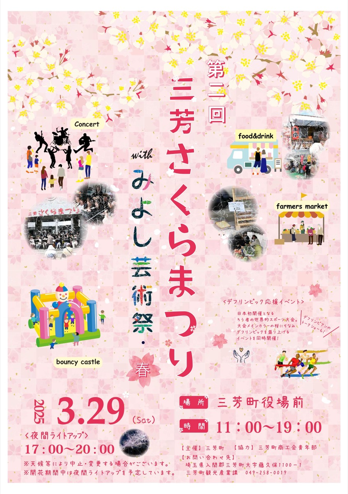
2025年3月23日(日)音の宝石箱プロデュース「ラグジュアリー&カジュアルコンサート第12回」開場12:30 開演13:00 @割烹おーべるじゅ木瓜 又吉秀樹Bar. 吉田連Ten. 大川博Bar. 廣瀬充Pf/arr. 阿部拓也Dr.
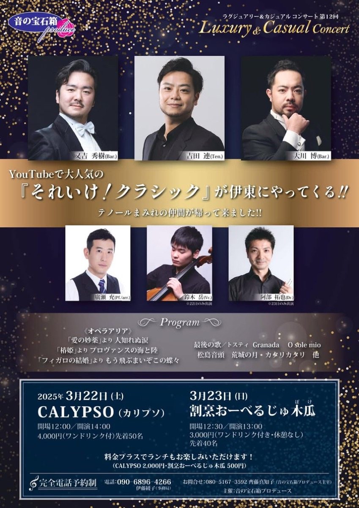
2025年3月14日(金)TAKUYA ABE QUARTET IZAEMON SPECIAL LIVE! Open18:00 Start19:00 @Garden pizzeria IZAEMON 小林真人p 前嶋のぞみvo 菅原聡美sax 阿部拓也ds
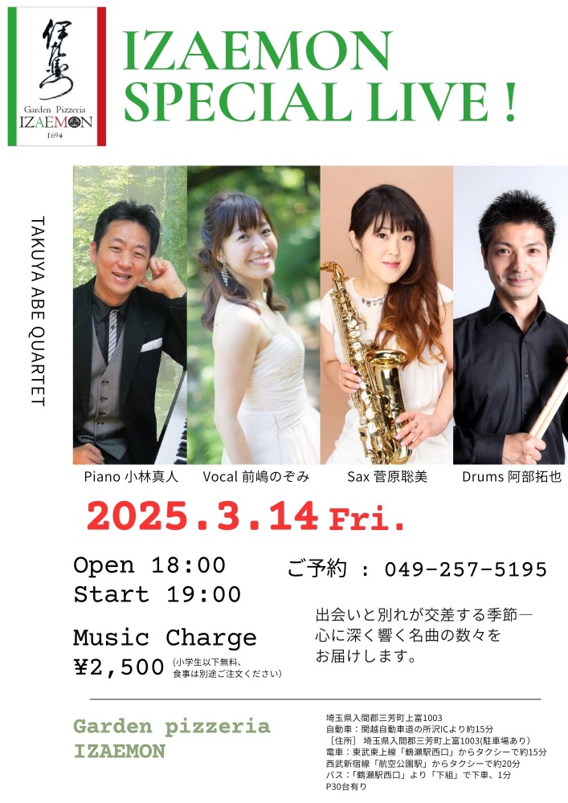
2025年3月9日(日)ふじみ野今昔コンサート Vol.3「ふじみ野のお祭りと歌謡曲・流行歌」11:00開演(10:30開場) @ふじみ野ステラ・ウェスト 阿部拓也(Per.)
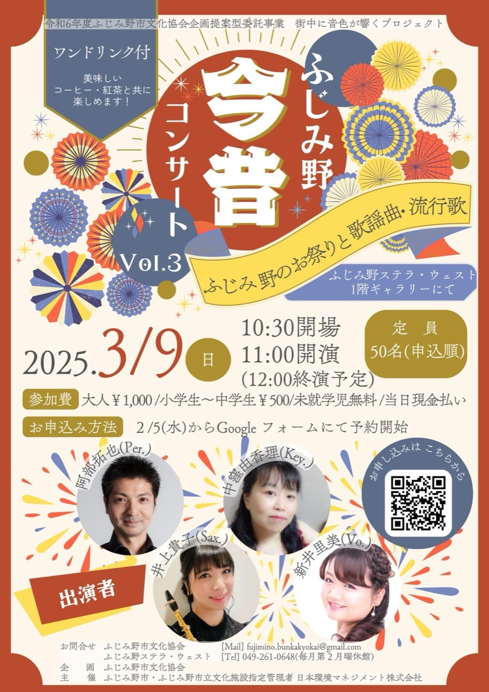
2025年1月26日(日)カシュカシュクー! 三芳ウインドオーケストラ みんなのコンサート VOL.3 11:00開演(10:30開場) @三芳町立中央公民館ホール 入場無料
2025年1月4日(土)テノールまみれのニューイヤーコンサート vol.9 13:00/18:00開演(2回公演) @渋谷区文化総合センター大和田 伝承ホール
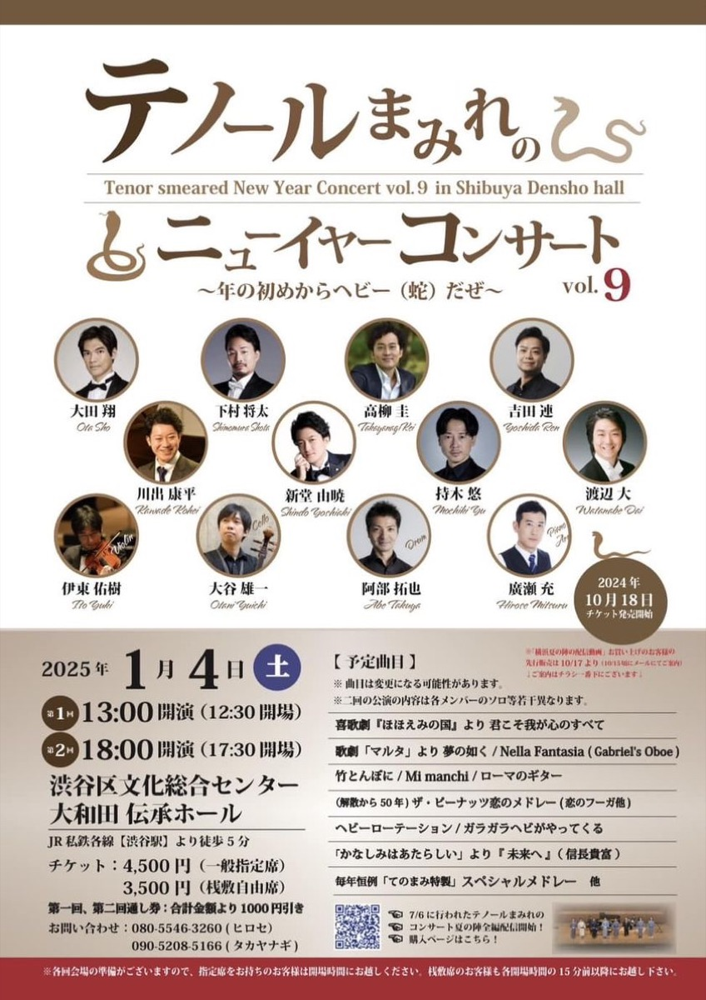
2024
2024年12月20日(金)IZAEMON CHRISTMAS Special LIVE「Little Peace Percussion」19:00 start(18:00 open) @農園レストラン伊左衛門 森村奏子Perc 塩浜玲子Marimba 森田瀬奈Marimba 阿部拓也Drums
2024年10月20日(日)三芳ウインドオーケストラ「第5回定期演奏会」14:20開場 15:00開演 @キラリ☆ふじみ(富士見市民文化会館)メインホール 全席自由 一般1,000円 中学生以下500円 指揮:阿部拓也
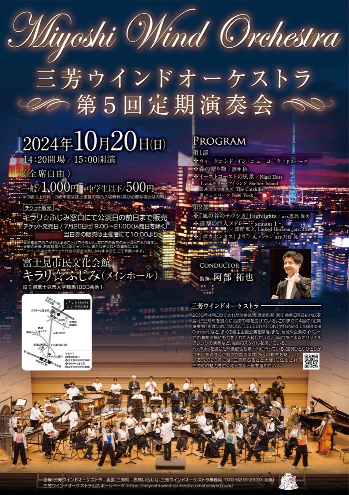
2024年9月23日(月・祝)みよしスポーツフェスタ「スポッ音」9:30〜16:00 @豊島区立三芳グランド 入場無料 三芳ウインドオーケストラ 10:00〜出演
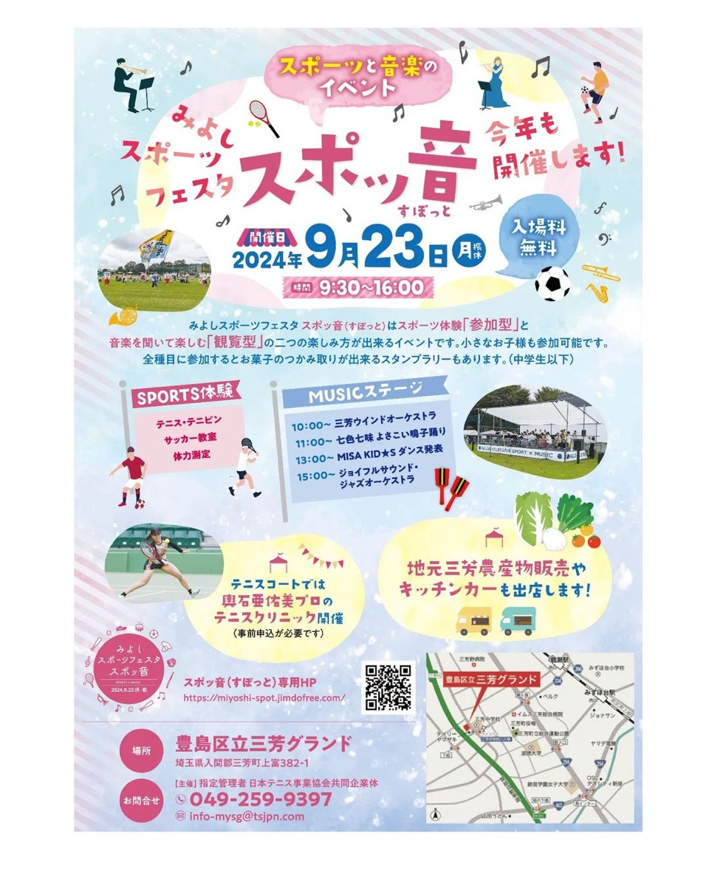
2024年9月5日(木)ステラジャックコンサート「午前のハーモニー〜ボーカル、ピアノ、ドラムが奏でる多彩な音楽〜」 @ふじみ野ステラ・ウェスト 前嶋のぞみVocal 堀家徳子Piano 阿部拓也Percussion
2024年8月23日(金)TAKUYA ABE QUARTET IZAEMON SPECIAL LIVE! Open18:00 Start19:00 @Garden pizzeria IZAEMON 小林真人p 前嶋のぞみvo 菅原聡美sax 阿部拓也ds
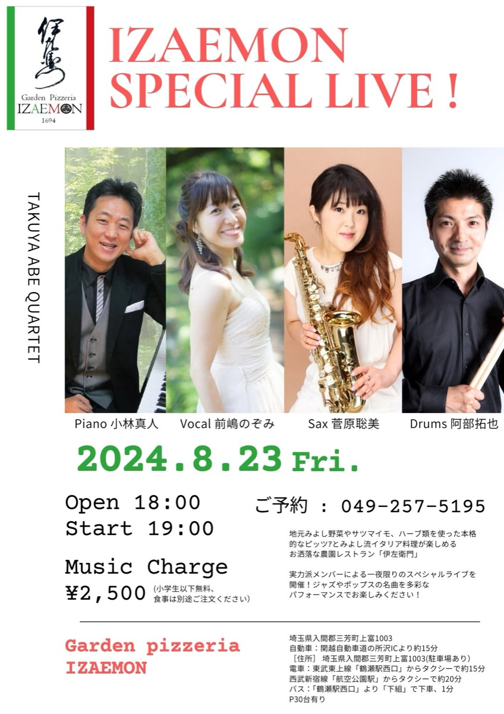
2024年5月10日(金）真荷舟 Words Presents 「特別な夜に Vol.37」19:00 OPEN
2024年5月11日(土）循環フェア 野外ステージ 阿部拓也サンライトカルテット 森田章b 中山涼子pf 米倉恒gt ジブリやディズニーソングをジャズでお届け ①12:00〜 ②14:00〜 場所:三芳町今昔村
2024年5月13日(月）フラワービート 兵庫県伊丹市 小学校 音楽鑑賞会
2024年5月14日(火）フラワービート 兵庫県伊丹市 小学校 音楽鑑賞会
2024年5月15日(水）フラワービート 大阪府豊中市 小学校 音楽鑑賞会
2024年5月20日(月）フラワービート 兵庫県伊丹市 小学校 音楽鑑賞会
2024年5月21日(火）フラワービート 兵庫県伊丹市 小学校 音楽鑑賞会
2024年5月22日(水）フラワービート 兵庫県伊丹市 小学校 音楽鑑賞会
2024年5月23日(木）フラワービート 兵庫県伊丹市 小学校 音楽鑑賞会
2024年5月24日(金）フラワービート 兵庫県伊丹市 小学校 音楽鑑賞会
2024年5月27日(月）フラワービート 兵庫県伊丹市 小学校 音楽鑑賞会
2024年5月28日(火）フラワービート 兵庫県伊丹市 小学校 音楽鑑賞会
2024年5月29日(水）フラワービート 大阪府吹田市 小学校 音楽鑑賞会
2024年6月1日(土)Quartet Plus＋ 10th Anniversary Concert 管楽器専門店ダクの地下ホール スペースDo 開場13:30 開演14:00 前売3000円 当日4000円 Special Guest:山口淳子(Vo) 阿部拓也(Dr)
2024年6月7日(金)@三芳町農園レストラン「伊左衛門」リトルピース・パーカッションライブ！ 塩浜玲子mari 森田瀬奈mari 森村奏子per 阿部拓也ds
2024年6月9日(日)東京 世田谷 中学生打楽器初心者講習会 講師
2024年6月12日(水)リトルピース・パーカッション トリオ 東京小平市 保育園 音楽鑑賞会 森田瀬奈mari 田中綾mari 阿部拓也per
2024年6月13日(木)真荷舟ライブ APIA40
2024年6月29日(土)第16回鶴瀬バンドフェスティバル 鶴瀬コミュニティセンターホール
2024年7月6日(土)テノールまみれのコンサート 夏の陣 in 横浜 13:30開演 4,000円(指定) 横浜市神奈川区民文化センター かなっくホール
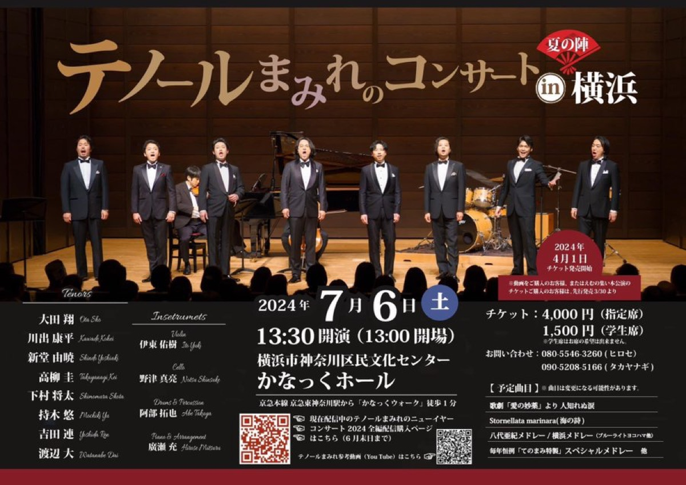
2024年7月18日(木)ふじみ野マンスリーコンサート ふじみ野市産業文化センターイベントホール 11:00〜11:50 柴田勇紀pf 井上貴子sax 阿部拓也dr 全席自由 1,000円
2024年3月30日(土)Mの集いコンサート vol.22「えむつど 春のハナ祭」13:30開演(13:00開場) @横浜市旭区民文化センター サンハート音楽ホール 阿部拓也(ドラム&パーカッション)
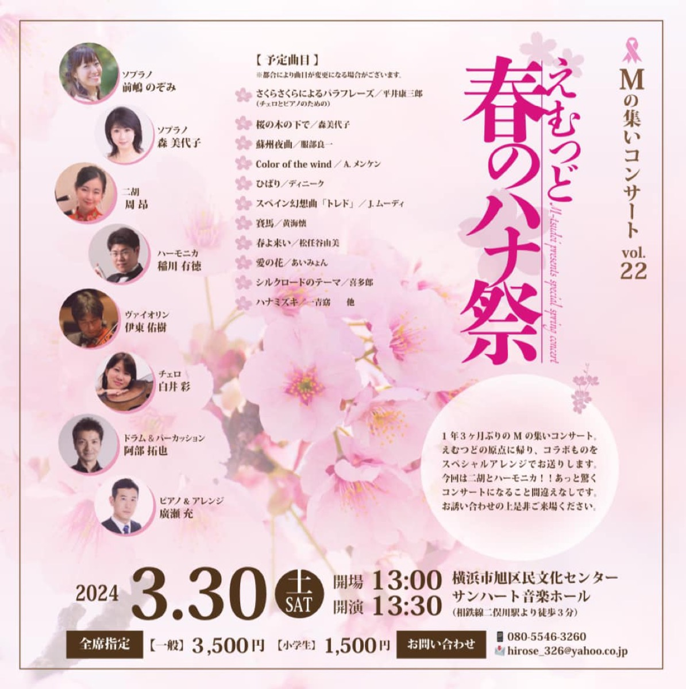
2024年3月3日(日)@コピスみよし 三芳ウインドオーケストラ「MUSE CELEBRATION VOL.7」 指揮:阿部拓也
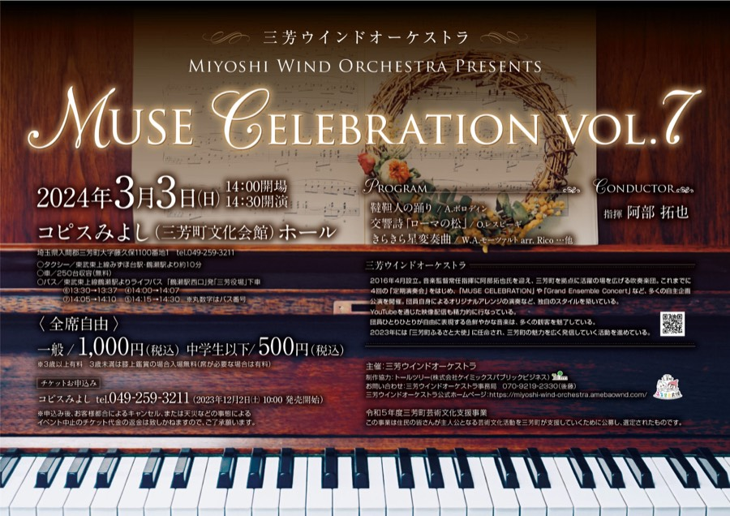
2024年2月25日(日)@神奈川県大井町 テノールまみれ
2024年2月24日(土)ラグジュアリー&カジュアルコンサート「イケメンぞろいの軍団が伊東に!!」〜Casual〜 @割烹おーべるじゅ木瓜 テノールまみれ
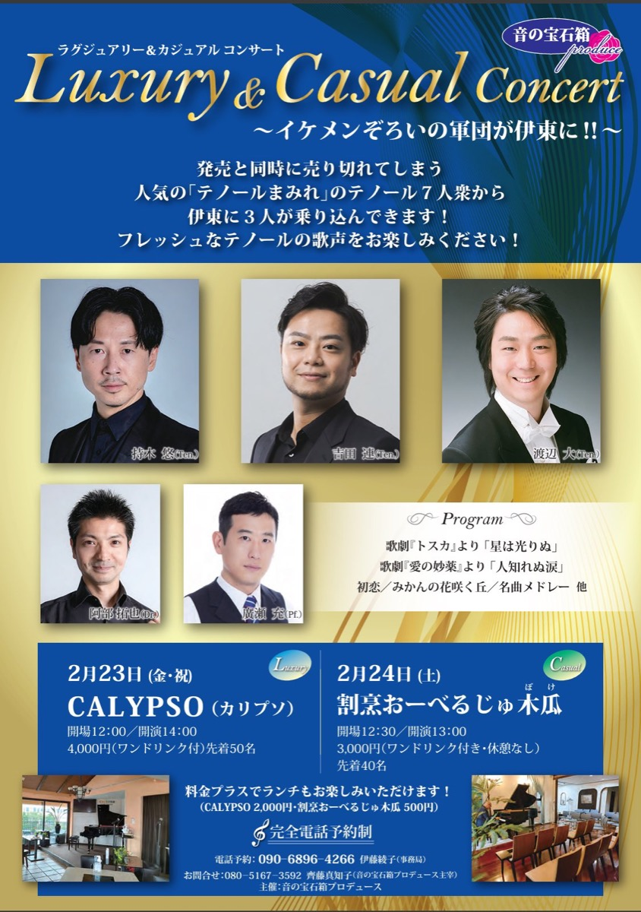
2024年2月23日(金)ラグジュアリー&カジュアルコンサート「イケメンぞろいの軍団が伊東に!!」〜Luxury〜 @CALYPSO テノールまみれ
2024年2月2日(金)@三芳町農園レストラン「伊左衛門」阿部拓也カルテットスペシャルライブ！ 小林真人p 菅原聡美sax 前嶋のぞみvo 阿部拓也ds
2024年1月7日(日)@渋谷伝承ホール テノールまみれのニューイヤーコンサート 19:00開演
2023
2023年12月24日(日)@キラリふじみ マルチホール 埼玉音楽院発表会
2023年12月21日(木)マンスリーコンサート第5回 @ふじみ野市産業文化センター パーカッションアンサンブル「リトルピース」11:00開演 塩浜玲子marimba 森田瀬奈marimba 森村奏子per 阿部拓也dr
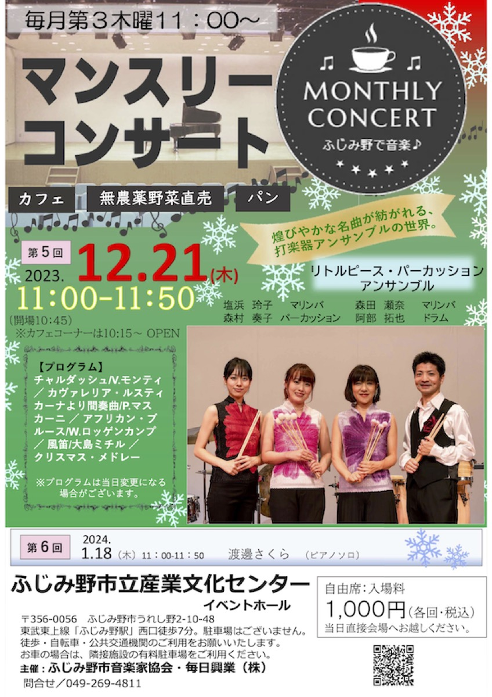
2023年12月3日(日)@鶴瀬コミュニティセンターホール 「バンドフェスティバルVol.15」主催 阿部拓也
2023年12月1日(金)@神奈川県川崎市 小学校音楽鑑賞教室「フラワービート」
2023年11月20日@神奈川県川崎市 小学校音楽鑑賞教室「ミラクルビート」
2023年11月19日(日)@中央公民館 11:00開演 三芳ウインドオーケストラ「カシュカシュククー！三芳ウインドオーケストラおひざでだっこコンサート」 指揮:阿部拓也
2023年11月12日(日)日本製鉄本社合唱団(元新日鐵本社合唱団)定期演奏会 percサポート
2023年11月5日(日)@板橋区立文化会館「コールかがやき」合唱祭 percサポート
2023年10月22日(日)髙橋浩明(sax)Bop Life発表会 ドラムサポート
2023年10月21日(土)@小澤酒造、澤乃井蔵開きに出演。酒蔵ステージにて12:00〜13:00演奏予定 ビッグバンド[ピノ] drums 阿部拓也
2023年9月30日鶴瀬西交流センターフェスティバル オープニング演奏
2023年9月22日@名古屋市 小学校音楽鑑賞教室「フラワービート」
2023年9月17日(土)@キラリふじみ 三芳ウインドオーケストラ「第4回定期演奏会」 指揮:阿部拓也
2023年7月23日@小田原 テノールまみれ
2023年7月21日(金)@伊左衛門 阿部拓也カルテット 完売御礼 小林真人p 菅原聡美sax 前嶋のぞみvo 阿部拓也ds
2023年6月25日(日)@三芳町中央公民館 14:00開演(13:30開場) 三芳ウインドオーケストラ「グランドアンサンブル・コンサート」 指揮:阿部拓也
2023年6月17日(土)@竹間沢公民館 マンスリスクエア パーカッションアンサンブル「リトルピース」 塩浜玲子marimba 森田瀬奈marimba 森村奏子per 阿部拓也dr
2023年6月11日(土)14:00開演 @ふじみの市西公民館 swing鍵盤ハーモニカ
2023年5月27日(土)@海老名市文化会館 女声合唱団「ララーズ」演奏会
2023年5月13日(土)@新大久保Do 完売御礼 クラリネットアンサンブル「アンサンブル・レーベン」
2022
2022年12月15日(木)18:30@プラザノース多目的ホール History of Big Band Jazz
2022年11月26日(土)@和光市サンアゼリア 彩音コーラス定期演奏会
2022年11月25日(金)「BUNKYO SIENA POPS 小ホール特別編」第3回 19:00開演(18:15開場) @文京シビックホール小ホール シエナサックス&ビーツ Guest Saxophone 須川展也 Saxophone 榮村正吾,貝沼拓実,大津立史 Drums阿部拓也 Percussion荻原松美
2022年11月23日(水・祝)①11:15 ②14:30 @湯河原スタジオトロッコ Mの集い×光彫り作家ゆるかわふう コラボコンサート
2022年11月20日(日)14:00 @三芳町中央公民館 三芳ウインドオーケストラMUSE CELEBRATION VOL.6 指揮:阿部拓也 ゲストVo,五大輝一 Vo,渓なつき
2022年11月6日@板橋区立文化会館 コールかがやき
2022年10月30日@さいたまプラザノース boplife発表会
2022年10月18日@日の出町立大久野小学校 えむの集い学校公演
2022年10月6日@横浜市 フワラービート学校公演
2022年10月4日@江戸川区小学校 えむの集い学校公演
2022年10月1日鶴瀬バンドフェスティバル 主宰:阿部拓也
2022年9月25日@大宮 女声合唱団「ゆうかり」演奏会 Perc.阿部拓也
2022年9月23日@豊島区立三芳グランド 三芳ウインドオーケストライベント演奏スポッ音(指揮)
2022年9月18日@伊東市観光会館 テノールまみれ
2022年9月9日@恵比寿KIRAホール 横谷基(p),森田章(b),阿部拓也(ds)
2022年9月4日@東京倶楽部 阿久津浩之(b) 林哲郎(sax/fl) Gustavo Anacleto(sax/fl) 川畑淳(p)坂下智子(fl) 阿部拓也(ds)小柳えめり(per)
2022年9月2日パーカッション・アンサンブル フワラービート学校公演
2022年8月27日@二俣川サンハート サークルM
2022年8月14日@コピスみよし 三芳ウインドオーケストラ第3回定期演奏会(指揮)
2022年7月22日@大宮 髙橋浩明(sax),森田章(b),山口真由子(vib),阿部拓也(ds)
2022年7月21日@APIA40 真荷舟ライブ
2022年7月18日ビッグバンド「PINO」イベント演奏
2022年7月10日@三島 三島合唱団コンサート
2022年6月19日@東京倶楽部 阿久津浩之(b) 林哲郎(sax/fl) Gustavo Anacleto(sax/fl) 川畑淳(p)坂下智子(fl) 阿部拓也(ds)小柳えめり(per)
2022年5月14日小屋敷真60th合唱祭
2022年4月29日@三芳町「令和の森公園せせらぎ水辺広場」開園式での演奏
2022年4月13日真荷舟単独ライブ
2022年4月9日@静岡 シャルロットワールド発表会
2022年3月13日合唱本番
2022年3月5日@ふじみ野ステライースト 初心者のためのドラム講座
2022年2月19日@東久留米 ブラスエクシードトウキョウひよこコンサート
2022年2月2日真荷舟単独ライブ
2022年1月30日@渋谷伝承ホール テノールまみれのニューイヤーコンサート
2021
2021年12月29日チェロアンサンブル カルメン朗読付き
2021年12月26日@新潟 ブラス・エクシード・トウキョウ ゲーム音楽公演
2021年12月25日@コピスみよし ブラス・エクシード・トウキョウ オリンピックメモリアルコンサート
2021年12月19日@ふじみ野ステライースト 夢と魔法の音楽会
2021年12月17,18日@富士 えむの集い
2021年12月10日@杉並公会堂小ホール えむの集いVol.19
2021年12月1日真荷舟配信ライブ
2021年11月27日@出雲 ブラス・エクシード・トウキョウ ゲーム音楽コンサート
2021年11月23日＠海老名 えむの集い
2021年11月21日三芳ウインドオーケストラMUSE CELEBRATION VOL.5(12月24日20:00にYouTube配信コンサートとして公開) 指揮:阿部拓也
2021年11月11日@狛江 リトル・ピース・パーカッション・アンサンブル学校公演
2021年11月10日＠東京純心女子中高 えむの集い学校公演
2021年11月8日ブラス・エクシード・トウキョウ学校公演
2021年11月7日コールかがやき本番
2021年10月12日@町屋 えむの集い学校公演
2021年10月3日@横須賀 ノーテナーコンサート
2021年9月23日三芳ウインドオーケストラ イベント演奏スポッ音
2021年9月5日鶴瀬バンドフェスティバルVol.12
2021年8月15日サークルMコンサート
2021年7月27,28日真荷舟レコーディング
2021年7月25日@プラザノース 親子コンサート
2021年7月23日@コピス 金管アンサンブルファンファーレ演奏
2021年7月14日三芳ウインドオーケストラMUSE CELEBRATION VOL.4,5
2021年6月27日@熊谷 ブラス・エクシード・トウキョウ ゲーム音楽公演
2021年5月19〜23日真荷舟レコーディング
2021年4月2日@静岡 シャルロットワールド
2021年3月14日合唱団コンサート
2021年3月9日クラリネットアンサンブル・レーベン録音
2021年2月20日@渋谷伝承ホール えむの集いコンサートVol.18
2021年2月6日@上福岡西公民館 阿部拓也カルテット 阿部拓也ds,福井健太sax,小林真人p,前嶋のぞみvo
2021年1月24日埼玉音楽院学院祭
2021年1月23日隠岐速人テノールコンサート
2020
2020年12月20日@稲城 ブラス・エクシード・トウキョウ サックスカルテット＋ドラムひよこコンサート
2020年12月2,3日エクシード金管アンサンブル収録
2020年11月29日三芳ウインドオーケストラMUSE CELEBRATION VOL.4
2020年10月29日リトムレコーディング
2020年10月25日鶴瀬バンドフェスティバル
2020年10月18日ふるまりコンサート
2020年9月18日阿久津浩之(b) 林哲郎(sax/fl) Gustavo Anacleto(sax/fl) 川畑淳(p)坂下智子(fl)
2020年9月3,4日エクシード・ザ・ウインズ収録
2020年8月29日@東久留米 ブラスエクシードトウキョウひよこコンサート
2020年8月16日サークルMコンサート
2020年7月26日プラザノース親子コンサート
2020年4月23日(木)@二子玉川 真荷舟単独ライブ
2020年3月21日(土)三芳ウインドオーケストラ「第3回定期演奏会」14:00開場 14:30開演 @コピスみよし(三芳町文化会館)ホール 全席自由500円 指揮:阿部拓也（新型コロナウイルスの影響により中止）
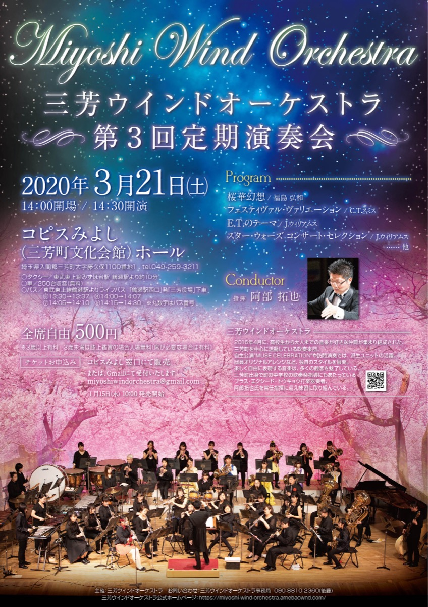
2020年2月25日@東京倶楽部 阿久津浩之(b) 林哲郎(sax/fl) Gustavo Anacleto(sax/fl) 川畑淳(p)坂下智子(fl) 阿部拓也(ds)
2020年2月15日(土)三芳ウインドオーケストラ 入間東部シルバーフェスティバル出演 場所:キラリふじみ
2020年2月7日ブラス・エクシード・トウキョウ トレジャーカルテット 東久留米市小学校アウトリーチ公演
2020年2月2日「鶴瀬バンドフェスティバル Exploration Musica Vol.10」10回目となる阿部拓也、米倉恒主催のバンドフェスティバル 場所:鶴瀬コミュニティセンター
2020年1月25日埼玉県吹奏楽コンクール新人戦審査員
2020年1月17日テノールまみれのニューイヤーコンサートvol.4 場所:大和田伝承ホール
2020年1月14日新潟県吹奏楽コンクール新人戦審査員
2019
2019年4月13日@東久留米まろにえホール エクシードアンサンブル まろにえぴよぴよコンサート
2019年4月21日@国分寺市いずみホール Mの集いコンサートvol.16
2019年4月25日@Gemini theater 真荷舟単独ライブ
2019年5月7日@西多摩郡瑞穂町 小学校音楽鑑賞教室 フラワービート
2019年5月15日@横浜みなとみらい EXCEED THE WINDS 2nd Concert
2019年5月18日@ミューザ川崎 クラリネット全員集合 ゲストドラマーとして出演
2019年5月29日@コピスみよし Mの集い 大東ガスイベント本番
2019年6月2日@三芳町上富 三芳ウインドオーケストラ カミトメマルシェ
2019年3月24日(日)「0歳からの三芳ウインドオーケストラ ピヨピヨコンサート」11:00開演(10:40開場) @三芳町立中央公民館ホール 入場無料
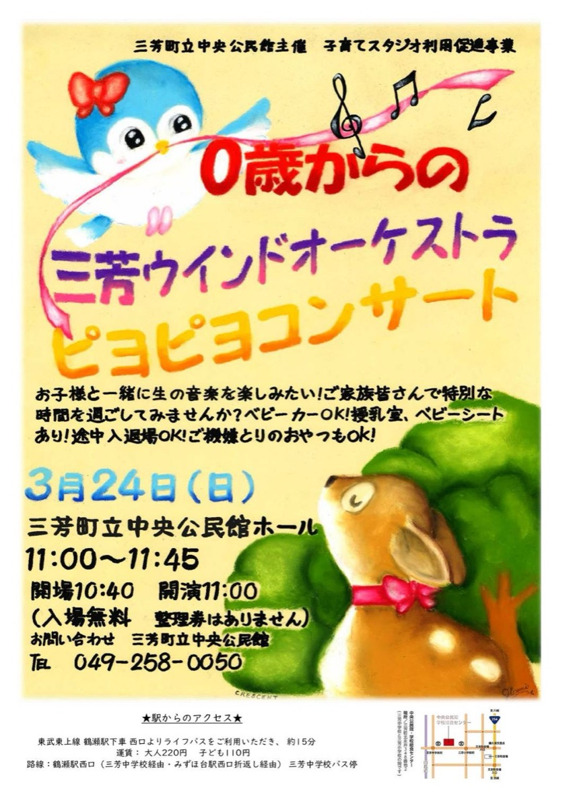
2019年3月10日(日)三芳ウインドオーケストラ「第2回定期演奏会」14:00開場 14:30開演 @コピスみよし(三芳町文化会館)ホール 全席自由 一般500円 高校生以下300円 指揮:阿部拓也
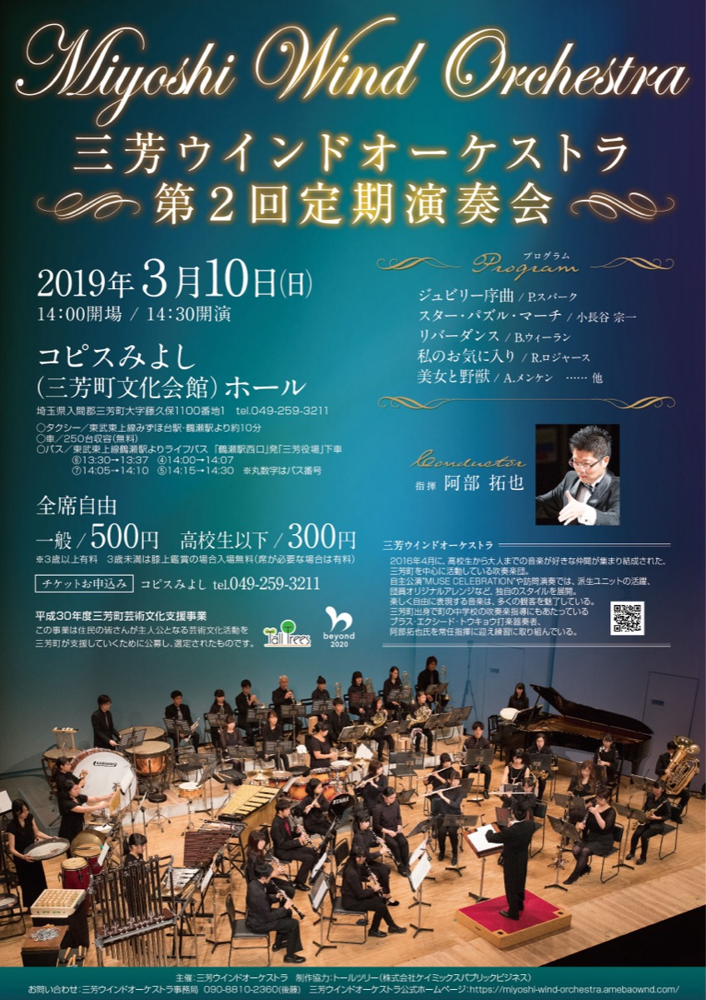
2019年2月11日(月・祝)「リラックスタイムコンサート vol.59」13:30開演(13:00開場) @鶴瀬西交流センター多目的ホール 入場無料 指揮:阿部拓也
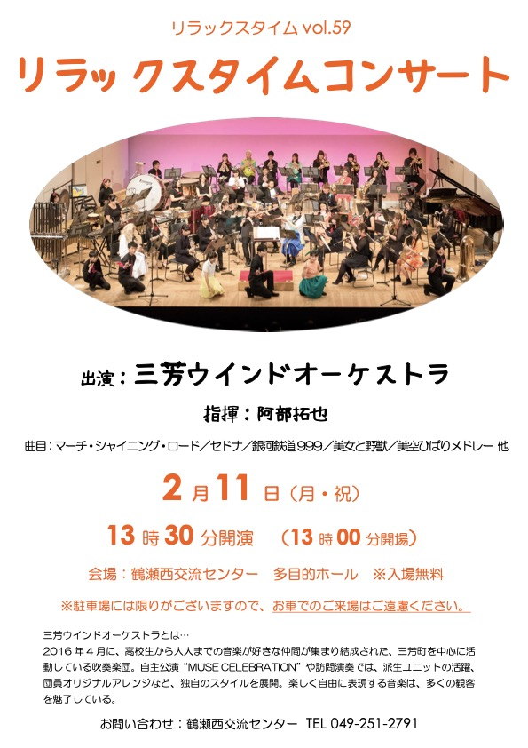
2019年6月20日@東中野ALT SPEAKER 真荷舟ライブ
2019年6月21日@竹間沢公民館 マンスリースクエア エクシードサクソフォンカルテットwithドラムス
2019年7月4日@紀尾井ホール 日本製鉄本社合唱団(元新日鐵本社合唱団)第4回定期演奏会の手伝い
2019年7月21日@さいたまプラザノース
2019年8月4日@ふじみ野産業文化センター 音楽教室発表会ドラムサポート
2019年8月12日(月・祝)14:00開演(13:30開場) @三芳町中央公民館多目的ホール 三芳ウインドオーケストラ「SUMMER Fantasia Festival2019」指揮:阿部拓也
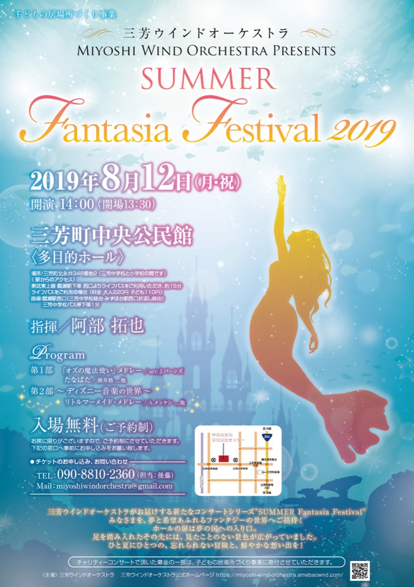
2019年8月19日@川口リリア ゆうかり女声合唱団第11回演奏会ドラムサポート
2019年8月24日(土)@東京ベイ舞浜ホテル ブラス・エクシード・トウキョウ金管アンサンブル×ドラム 企業イベント演奏
2019年8月31日(土)@水道橋words 真荷舟ライブ
2019年9月23日(月)@沖縄市music bar F 真荷舟ライブ
2019年10月5日(土)@コピスみよし 三芳ウインドオーケストラ(指揮) ふれあいコンサート
2019年10月6日(日)@キラリふじみ えむの集い 東上ガス主催「東上フェスタ2019秋 “えむのつどい” 復興支援チャリティーコンサート」
2019年10月17日(木)@東京都檜原村 小学校 BRASS EXCEED TOKYO音楽鑑賞教室
2019年10月18日(金)@秋川キララホール えむの集い音楽鑑賞教室
2019年10月19日(土)18:30開演 @練馬MUSIC DINER FAMILY 田口みきさBAND ドラムサポート 田口みさき(Vo.Key)石川哲也(Ba)井上貴子(sax)阿部拓也(ds)
2019年10月20日(日)15:30開演 さいたま市生涯学習総合センター 高橋浩明(sax)Bop Life発表会 ドラムサポート
2019年10月27日(日)14:00〜14:40 @長野県立大学学園祭 シンガーソングライター千寿 ドラムサポート 千寿(Vo.Key)新井大進(Gt)阿部拓也(ds) 入場無料
2019年11月3日(日)14:00開演 @越谷サンシティホール大ホール BRASS EXCEED TOKYO〜吹奏楽が奏でるゲーム音楽in越谷〜
2019年11月8日(金)@伊勢原市 パーカッションアンサンブル「フワラービート」音楽鑑賞教室
2019年11月10日(日)@板橋区文化会館大ホール 合唱団「コールかがやき」パーカッションサポート
2019年11月12日(火)@横浜市 小学校 BRASS EXCEED TOKYO音楽鑑賞教室
2019年11月23日(土)@小田原市 えむの集い音楽鑑賞教室
2019年11月24日(日)①開演11:00②開演14:30 2回公演 @三芳町立中央公民館 三芳ウインドオーケストラ「MUSE CELEBRATION VOL.3」(指揮/ドラム)
2019年11月25日(月)@埼玉県吉川市立美南小学校 小林真人 Piano×α 音楽鑑賞教室
2019年12月7日(土)13:30開演 @磯子公会堂ホール えむの集いVol.17「Special Christmas Concert」
2019年12月8日(日)①開演11:00②開演15:00 2回公演 @世田谷区国立成育医療研究センター NPO法人リトム「おつきさまのカケラ」 小林真人(Key)李文佳(Vn)阿部拓也(ds)佐藤めぐみ(Vo)松本ゆきこ(Dance)
2019年12月19日(木)19:00開演 @東京倶楽部目黒店 阿久津浩之グループ(Fusion) 阿久津浩之(b) 林哲郎(sax/fl) Gustavo Anacleto(sax/fl) 川畑淳(p)坂下智子(fl) 阿部拓也(ds) 河野弓子(vo)
2019年12月22日(日)サークルMピアノ発表会ドラムサポート
2019年12月23日(月)19:00開演 杉並公会堂大ホール BRASS EXCEED TOKYO第21回演奏会「Special Xmas Concert vol.3」
2018
2018年3月25日(日)三芳ウインドオーケストラ「MUSE CELEBRATION VOL.1」14:00開場 14:30開演 @三芳町中央公民館多目的ホール 入場無料(要整理券) 指揮:阿部拓也
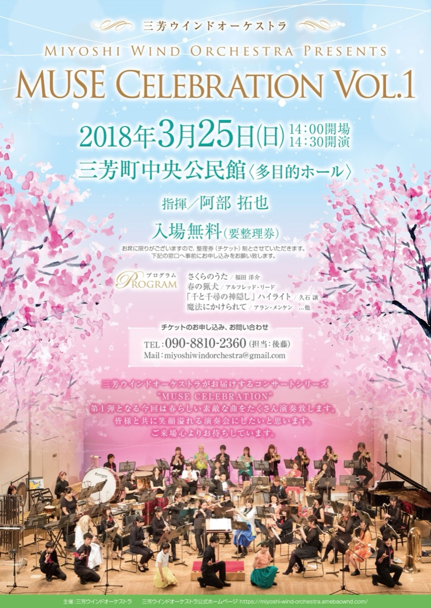
2017
2017年11月26日(日)三芳ウインドオーケストラ「第1回定期演奏会」14:00開場 14:30開演 @コピスみよし(三芳町文化会館)ホール 全席自由500円 指揮:阿部拓也
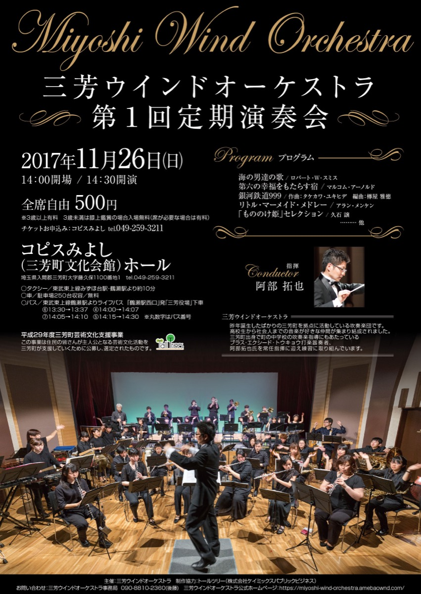
2017年5月14日(日)三芳ウインドオーケストラ「結成記念コンサート」13:30開演(13:00開場) @三芳町立中央公民館 多目的ホール 入場無料 指揮:阿部拓也